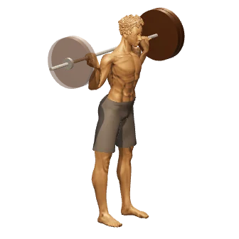
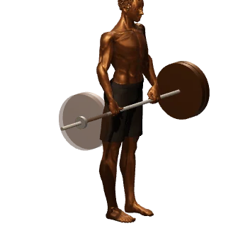
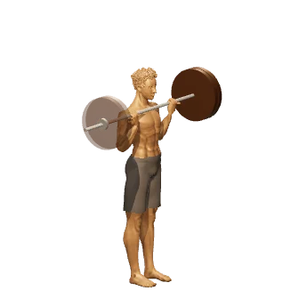
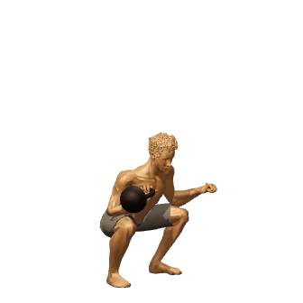

Areté
Entrena para todo.
App gratis de entrenamiento híbrido. Mide tus 7 dominios de fuerza y resistencia con tests reales, descubre cuál te frena y entrénalo con Quirón, un coach de IA que lee tus datos.
Gratis. Sin cuenta. Sin anuncios.

Areté
App gratis de entrenamiento híbrido. Mide tus 7 dominios de fuerza y resistencia con tests reales, descubre cuál te frena y entrénalo con Quirón, un coach de IA que lee tus datos.
Gratis. Sin cuenta. Sin anuncios.
Todos nos especializamos sin darnos cuenta: entrenamos lo que se nos da bien y evitamos lo que duele. Los números lo esconden, hasta que alguien mide todo.
¿Tu nivel? I.
No la media. No tu récord favorito. En Areté el nivel global es el mínimo de tus siete dominios, así que solo hay una forma de subir: entrenar lo que evitas.
Es el sistema de verdad. Pruébalo.
Cada dominio se mide con un test guiado y un protocolo publicado: 5K, snatch test, Simple & Sinister, McGill, AKE… Los estándares se ajustan a tu peso corporal, no a una tabla genérica.
Los tests sustituyen entrenamiento, no se añaden: caben en tu semana. Y lo que ya registras (tus básicos, tus dominadas, tu mejor 5K) cuenta solo.
Quirón · tu coach
Quirón contesta con tus series, tus carreras y tu perfil delante. No se inventa cifras: las saca de lo que has registrado.
Demo gratis cada día, sin clave.
¿Qué me frena ahora mismo?
Sí. Y apunta que me molesta el hombro izquierdo.
Conversación de ejemplo
Planes y progresión
Empieza con el programa Areté (4 fases: fuerza, hipertrofia, definición y ajustes), pídele uno a Quirón o importa el tuyo: el formato es JSON abierto. Cada día la app te dice qué peso toca, y por qué.
Hoy
Fase 1 · Fuerza — Día 2
Semana 3 de 6 · Bloque pesado
Pantalla de ejemplo.
Pulsa «3D» junto al ejercicio y gíralo para verlo desde el ángulo que te haga falta. Ya hay 30, de la sentadilla al press militar.




Trae tus salidas en GPX o TCX desde el reloj o Strava. Ritmos, zonas, récords y tu VO2max estimado.
Tu perfil, tus sesiones y cada subida de nivel, como imagen o vídeo para stories.
Cada serie tal como la hiciste, la carga estimada por ejercicio y tus récords a la vista.
Conecta tu banda de pecho y entrena por zonas de frecuencia cardiaca.
Guías de nutrición por fase, sueño, movilidad y recuperación, escritas para el sistema.
Instálala en el móvil como una app. Entrenar y registrar series funciona sin cobertura.
Sin cuenta. Sin anuncios. Tus entrenos viven en tu dispositivo, con copia opcional en tu propio Google Drive. A Quirón solo le llega lo que le preguntas, y solo cuando le preguntas.
Excelencia sin días libres. Así es Areté.
Nada. Areté es gratis, sin cuenta, sin anuncios y sin suscripción. Quirón tiene una demo gratis cada día; si lo usas mucho, pones tu propia clave de IA (OpenAI, OpenRouter, Groq…) y pagas solo lo que gastes con ellos.
Fuerza máxima, fuerza de tracción, capacidad glicolítica, cardiovascular, resistencia de fuerza, resistencia de core y movilidad funcional. Cada uno tiene su test y sus estándares por nivel, relativos a tu peso corporal. Lo explico a fondo en este artículo.
Porque la media premia la especialización: un press enorme puede esconder que no aguantas 20 minutos corriendo. El mínimo te obliga a mirar justo donde no quieres mirar, y ahí es donde está el progreso.
Sí para entrenar, registrar y hablar con Quirón. Los umbrales de nivel están calibrados hoy con normativos de hombre de unos 75 kg, y la app lo avisa en tu perfil. La tabla femenina está pendiente.
El programa principal usa barra y cardio. Pero hay dominios enteros que se entrenan con muy poco: el plan «Efecto Kettlebell» trabaja la resistencia de fuerza 10 semanas con una sola pesa rusa.
Sí. Pídeselo a Quirón, o escríbelo tú: los planes son archivos JSON con un formato documentado. Lo importas y lo entrenas con seguimiento completo.
Sí: exporta la actividad como GPX o TCX y la importas en Areté. Los .FIT todavía no se leen. En el navegador el GPS no puede grabar con la pantalla apagada, así que para correr te recomiendo el reloj y luego importar.
Sí. Ábrela en Safari y usa «Compartir → Añadir a pantalla de inicio»: queda instalada como una app, con su icono y sin barra del navegador.
En el almacenamiento de tu navegador, en tu dispositivo. Si quieres, activas la copia en tu propio Google Drive, que también sincroniza entre tus dispositivos. No hay cuenta de Areté ni una base de datos nuestra con tus entrenos. Cuando le escribes a Quirón, tu mensaje y los datos que necesita para contestar van al proveedor de IA.
Sí, es una PWA instalable: entrenar, registrar series y consultar tu perfil funciona offline. Quirón sí necesita conexión.
Gratis. Sin cuenta. Sin anuncios.